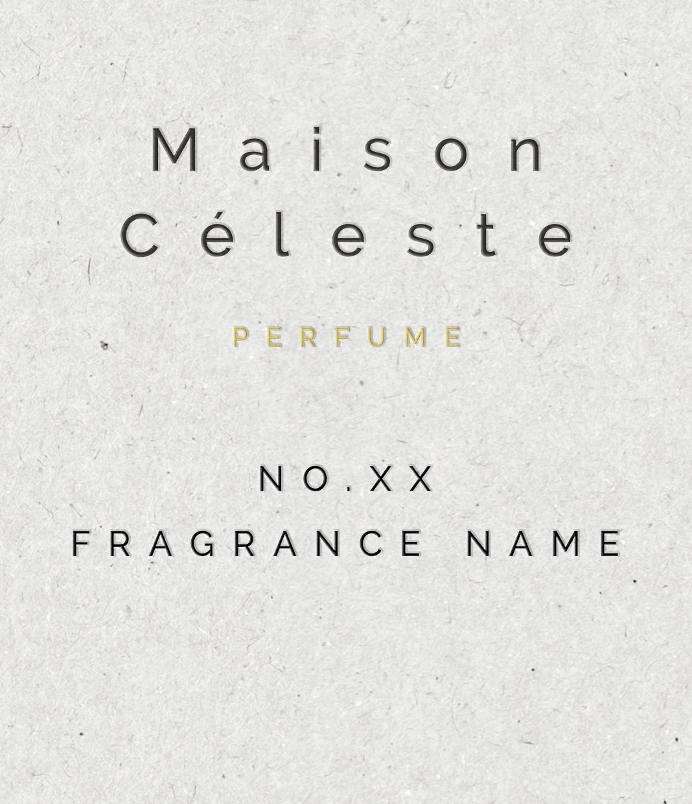
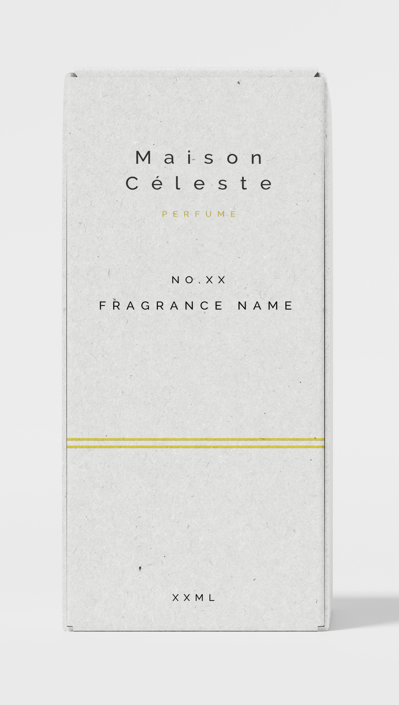
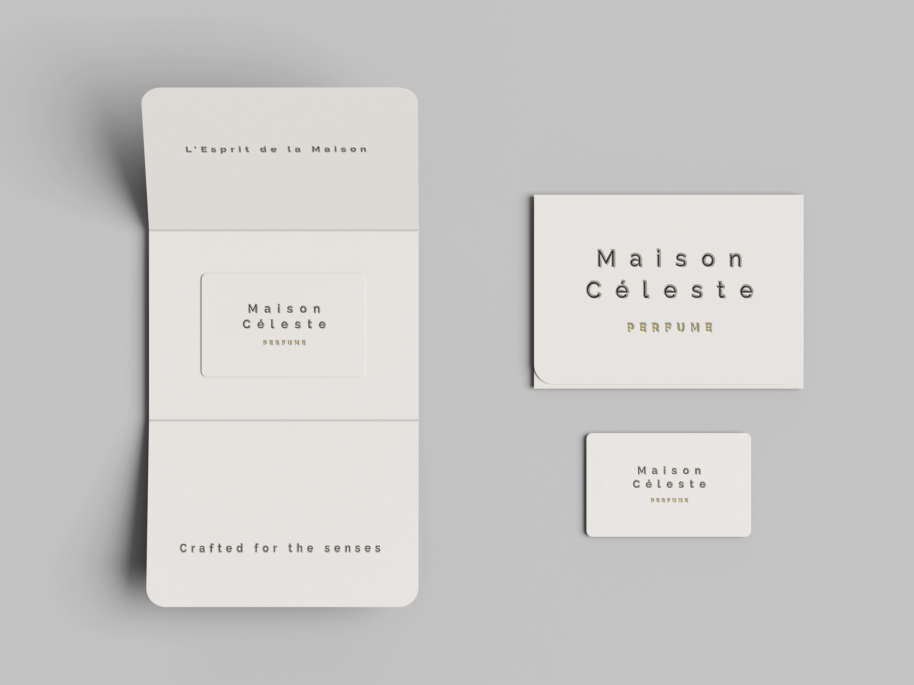
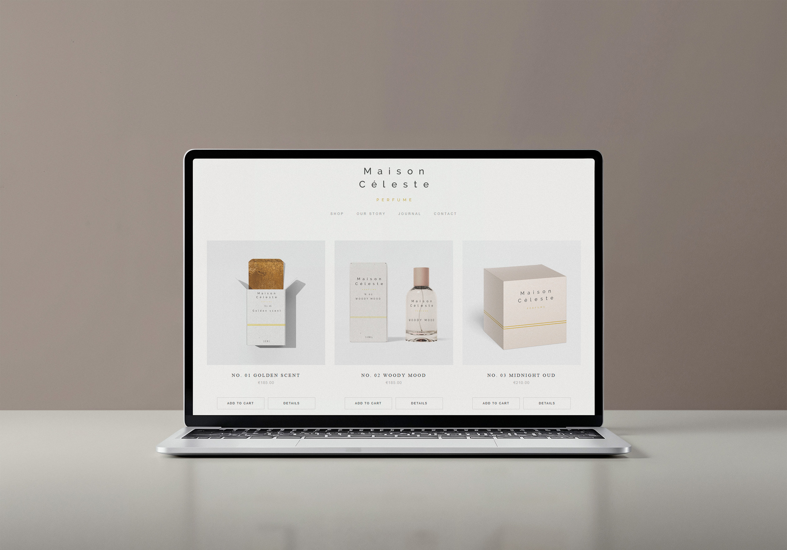

MAISON CÉLESTE
Brand Identity & Packaging Design

Brand Identity & Packaging Design
The niche fragrance market is trapped in a false choice: romanticized heritage that feels dated, or clinical laboratory minimalism that feels soulless.
The ultra-premium consumer has evolved into a "Scent Curator." They seek more than a fragrance; they demand transparency in sourcing, molecular precision, and the intellectual narrative of how a scent is engineered.
We positioned Maison Céleste as a legacy house modernized in real-time. We took the 'Golden Age' of perfumery—ancestral distillation and raw botanical sourcing—and overstamped it with the technical rigor of 21st-century molecular synthesis. The result is 'Modernized Yesterday': a brand that feels like it has existed for centuries but was re-indexed this morning
The identity is a dialogue between eras. A timeless, architectural Sans-Serif carries the weight of a legacy house, while the technical Monospace acts as a 'data-stamp,' providing the molecular detail required for a research-led brand.

Layouts utilize an 'Archival Grid.' By maintaining 80% negative space, we replicate the focused intensity of a laboratory ledger, ensuring the product remains the sole specimen of interest.
The identity is designed to maintain its authority in technical environments where gold foil is not applicable.
The palette is an 'Inverted Classicism.' Alabaster Cream evokes the texture of aged vellum, while Warm Charcoal and Brushed Gold signify the industrial precision of modern extraction.
Alabaster Cream (#FBF9F6)
Material: Heavy, 300gsm technical parchment.
Warm Charcoal (#2C2A29)
Material: Carbon-based archival ink
Brushed Gold (#D4AF37)
Material: Anodized aluminum components, signifying the "Gold Standard" of extraction.
The label system is a master index. By leading with the 'Collection Number' (NO. XX) and technical nomenclature, we transform a luxury item into a scientific record. Every bottle is an entry in a living archive



Blind embossing on heritage stock creates a 'Tactile Anachronism'—the physical weight of the past meeting the sharp, technical lines of the present.
The box design follows the same minimalist restraint, using structural integrity and premium finishes to create a "ritual" of opening.




Business cards and thank you cards utilize the same Alabaster Cream paper stock with blind-embossed logos, maintaining a consistent tactile thread across every physical brand interaction.

A simple, clean website design focuses on high-end product photography and minimal navigation, allowing the user to explore the "Archive" without the noise of traditional e-commerce.
